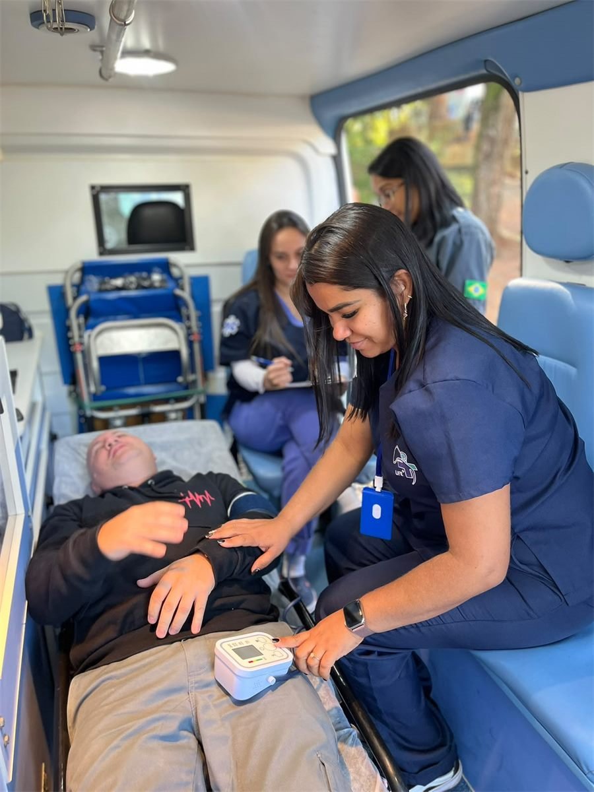
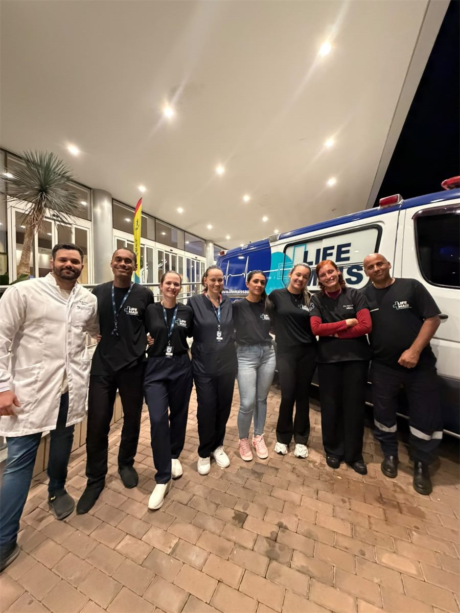

Transferência Inter-Hospitalar com Ambulância UTI 24h
Transporte seguro de pacientes entre hospitais com equipe médica embarcada, monitorização contínua e ambulâncias UTI equipadas. Disponível 24h para todo o Estado de SP.

Remoção hospitalar segura para qualquer perfil de paciente
Realizamos transferências inter-hospitalares com total segurança clínica, para os mais variados perfis de pacientes e graus de complexidade.

Do acionamento à chegada com segurança no hospital destino
Cada transferência é cuidadosamente planejada para garantir a estabilidade e segurança do paciente em todo o trajeto.
Recebemos o relatório clínico do hospital de origem para dimensionar a equipe e os equipamentos adequados ao perfil do paciente.
Médico e/ou enfermeiro embarcam junto ao paciente, assumindo os cuidados durante o trajeto com total segurança clínica.
Sinais vitais monitorados continuamente durante o transporte, com capacidade de intervir imediatamente em qualquer intercorrência.
Chegada ao hospital destino com passagem estruturada de caso à equipe receptora, garantindo continuidade do cuidado sem falhas.
Ambulância básica ou UTI: qual usar em cada caso?
A escolha do tipo de ambulância é feita com base na avaliação clínica do paciente e no risco durante o transporte.
Tipo B — Suporte Básico
- Pacientes estáveis, sem risco imediato
- Pós-alta hospitalar com cuidados básicos
- Técnico de enfermagem e condutor
- Oxigênio, imobilizadores, DEA
- Custo mais acessível
Tipo D — UTI Móvel
- Pacientes graves ou instáveis
- UTI para UTI, ventilação mecânica
- Médico e enfermeiro embarcados
- Monitor, ventilador, bomba de infusão
- Medicamentos de suporte avançado
Dúvidas sobre Transferência Inter-Hospitalar
Precisa de transferência inter-hospitalar agora?
Nossa central está disponível 24h. Entre em contato e nossa equipe avalia o caso imediatamente.
Conheça todos os nossos serviços
Atendimento Pré-Hospitalar
Equipe médica e ambulâncias para urgências e emergências 24h em Campinas e São Paulo.
Ver serviçoCobertura de Eventos
Suporte médico completo para shows, formaturas, congressos e eventos com grande público.
Ver serviçoHome Care
Cuidado profissional no conforto do lar — enfermagem 24h, visitas médicas e curativos.
Ver serviçoBombeiro Civil e Brigadista
Brigadistas profissionais para eventos, empresas e indústrias com assessoria para AVCB.
Ver serviçoCursos de Capacitação
BLS, ALS, primeiros socorros, bombeiro civil e APH com instrutores experientes.
Ver serviço